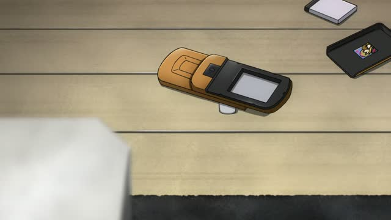

じゃなかった・ではありませんでした
| Polite | じゃなかったです everyday, softer じゃありませんでした standard polite, a bit firmer ではありませんでした most formal: news, speeches, writing |
|---|---|
| Casual | じゃなかった |
Same meaning: "wasn't". Only the politeness changes.
Examples
You open the box from the online shop. Wrong item.
え、これじゃなかった。
"Huh, it wasn't this one."
You tell the shop staff the same thing on the phone.
注文したのはこれじゃありませんでした。
"What I ordered wasn't this."
A coworker asks if yesterday was your day off.
いや、休みじゃなかったです。
"No, it wasn't my day off."
You thought you saw a friend at the station. You didn't.
あれ、ケンじゃなかった。
"Oh, that wasn't Ken."
With and without
休みじゃない。
"It's not a day off." Now.
休みじゃなかった。
"It wasn't a day off." Before. Casual. ない → なかった, like い-adjectives.
休みじゃありません。
"It's not a day off." Now. Polite.
休みじゃありませんでした。
"It wasn't a day off." Before. Polite. じゃなかったです is a bit softer and more everyday. In writing: ではありませんでした.
The です family
Sentence mining

Weakest Beast · Episode 5
愛じゃなかった。
"That wasn't love."
Noun + じゃなかった: wasn't.
I'm Taking the Day Off · Episode 1
行列じゃなかった？
"Wasn't there a line?"
With a rising voice it checks: "wasn't it ...?"

Your Name
夢じゃなかった。
"It wasn't a dream."
夢だった → 夢じゃなかった.
Fermat Kitchen · Episode 1
僕じゃなかった。
"It wasn't me."
僕じゃない, in the past.

Durarara!! · Episode 18
そうじゃなかった。
"That wasn't it."
そうじゃなかった: it wasn't like that.

Legal High · Episode 7
認知症ではなかったと？
"You're saying there was no dementia?"
ではなかった: the stiffer, more formal じゃなかった.

From Up on Poppy Hill
私の苦労は 無駄ではなかった！
"My hard work wasn't for nothing!"
無駄 is a な-adjective; same pattern: 無駄ではなかった.
God's Blessing on this Wonderful World! · Episode 6
まあ、嫌いなヤツではなかったよ。
"Well, he wasn't a guy I hated."
ではなかった + よ: telling it plainly.